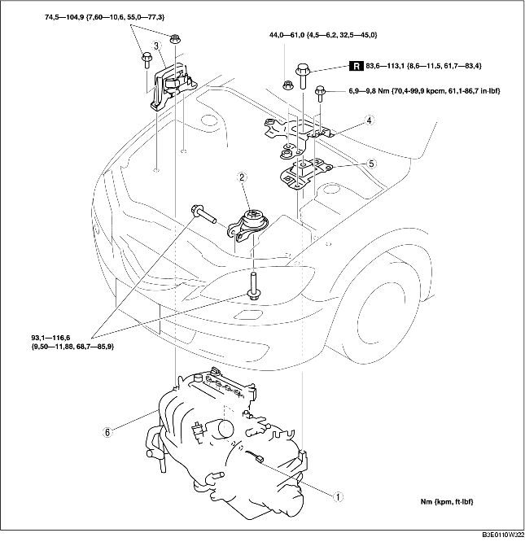

DEMONTERING/MONTERING AV MOTOR [LF]
B3E011001001W04
-
Varni ng
-
• Bränsleånga är mycket farligt. Den är mycket lättantändlig och kan orsaka svåra skador och olyckor. Håll alltid gnistor och öppna lågor borta från bränslet.
-
• Bränsleläckage och bränslespill är mycket farligt. Bränslet kan antändas och orsaka svåra skador och olyckor eller till och med dödsfall. Bränsle kan dessutom irritera hud och ögon. För att förhindra detta, följ alltid anvisningarna under 'Säkerhetsföreskrifter för bränslesystemet'. (Se Säkerhetsföreskrifter för bränslesystemet.)
1. Ta bort tändstiftskyddet. (Se DEMONTERING/MONTERING AV TÄNDSTIFTSKYDD [LF].)
2. Ta bort luftrenaren och luftslangen. (Se DEMONTERING/INSTALLATION AV INSUGSLUFTSYSTEM [LF].)
3. Demontera batterikåpan, batteriets ventilationskanal, batteriet och batterihållaren. (Se DEMONTERING/MONTERING AV BATTERIET [LF].)
4. Koppla loss bränsleslangarna. (Se DEMONTERING/MONTERING AV SNABBKOPPLING [ZJ, Z6, LF].)
5. Demontera följande delar.
-
(1) Gasvajer och gasvajerkonsol
-
(2) Framhjul och däck (Se ALLMÄN ARBETSGÅNG (HJULUPPHÄNGNING).)
-
(3) Under kåpa och innerskärmar
-
(4) Drivrem luftkonditionering (Se BYTE AV DRIVREM [LF].)
-
(5) Luftkonditioneringskompressorn med rören fortfarande anslutna
-
Observera
-
• Säkra luftkonditioneringens kompressor med tråd eller rep så att den är ur vägen.
6. Tappa av växellådsoljan (MTX) eller (ATX) (Se BYTE AV VÄXELLÅDSOLJA [F35M-R].) (Se BYTE AV AUTOMATVÄXELÅDSSOLJAN (ATF).)
7. Tappa av motorns kylvätska (Se BYTE AV KYLVÄTSKA.)
8. Koppla loss bromsvakuumslangen.
9. Demontera följande delar.
-
(1) Balken (Se DEMONTERING/MONTERING AV AVGASSYSTEMET [LF].)
-
(2) Tvärbalk fram, främre krängningshämmare, länkarm, styrväxel och motorfästesgumm nr 1 (Se DEMONTERING/MONTERING AV STYRVÄXEL OCH LÄNKSYSTEM.)
-
(3) Drivaxlar (Se DEMONTERING/MONTERING AV DRIVAXEL.)
-
(4) Kylvätskans expansionstank med slangen fortfarande ansluten
-
(5) Kylfläktenheten (Se DEMONTERING/MONTERING KYLARE.)
-
(6) ATF-slangen, väljarkabeln och kablaget (ATX) (Se DEMONTERING/MONTERING AV AUTOMATVÄXELLÅDAN [LF].)
-
(7) Växelvajer (MTX) (Se DEMONTERING/MONTERING AV MANUELL VÄXELLÅDA [G35M-R].)
-
(8) Urkopplingscylinder med röret fortfarande anslutet (MTX) (Se DEMONTERING/MONTERING AV URKOPPLINGSCYLINDER.)
10. Koppla loss värmarslangen.
11. Koppla loss övre och nedre kylarslang.
12. Koppla loss huvudljuddämparen (Se DEMONTERING/MONTERING AV AVGASSYSTEMET [LF].)
13. Demontera i den ordning som anges i tabellen.
14. Montera i omvänd ordning mot demonteringen.
-
Försiktigt
-
• Dra inte åt bulten i motorfästesgummi nr 1 innan fästbulten i motorfästesgummi nr 3 är åtdragen. (Se Observera vid montering av motorfäste nr 3 och motorfästesgummi nr 4.)
15. Starta motorn. Och kontrollera och justera vid behov.
16. Kontrollera följande och justera vid behov.
-
• Framhjulsinställning (Se HJULINSTÄLLNING FRAM.)
-
• Remskiva och rem beträffande kast och kontakt.
-
• Läckage av motorolja, kylvätska, växellådsolja och bränsle.
-
• Tändförställning och tomgångsvarvtal samt CO- och HC-mängder. (Se MOTORINSTÄLLNING [LF].)
-
• Funktionen hos motordrivna tillbehör.
-
Observera
-
• Om motorn renoverats och monterats i fordonet, ska en provkörning genomföras för att kontrollera att det inte finns något onormalt.

|
1
|
Huvudsäkringsblockets kontakt
|
|
2
|
Motorfästets gummi nr 1
|
|
3
|
Motorfäste Nr 3
|
|
4
|
Batterifäste
|
|
5
|
Motorfästesgummi nr 4
|
|
6
|
Motor, växellåda
|
Observera vid demontering av huvudsäkringsblockets kontakt
1. Lossa hållaren i den ordning som framgår av figuren.
2. Dra upp låsarmen och demontera kontakten.
Observera vid demontering av motorfäste nr 3 och motorfästesgummi nr 4
1. Säkra motorn och växellådan med en motordomkraft och tillbehör enligt bilden.
Observera vid montering av motorfäste nr 3 och motorfästesgummi nr 4
1. Säkra motorn och växellådan med en motordomkraft och tillbehör enligt bilden.
2. Montera motorfästesgummi nr 1 och motorfästesgummi nr 4.
-
Observera
-
• Dra inte åt bulten och muttern för motorfästesgummi nr 1 och motorfästesgummi nr 4 under detta steg.
3. Dra åt fästbulten till nya motorfästesgummi nr 4 enligt bilden.
-
Åtdragningsmoment
-
83,6-113,1 Nm
-
{8,6-11,5 kpm, 61,7-83,4 ft·lbf}
4. Dra åt motorfästesgummi nr 4 och batterifästets bultar och muttrar i den ordning som anges i bilden.
-
Åtdragningsmoment
-
(1) 44,0-61,0 Nm
-
{4,5-6,2 kpm, 32,5-44,9 ft·lbf}
-
(2) 6,9-9,8 Nm
-
{70,4-99,9 kpcm, 61,1-86,7 in·lbf}
5. Dra åt pinnbultarna för motorfästeskonsol nr 3.
-
Åtdragningsmoment
-
7,0-13 Nm
-
{71,4-132,5 kpcm, 62,0-115,0 in·lbf}
6. Dra åt bultar och muttrar för motorfästeskonsol nr 3 i den ordning som visas i bilden.
-
Åtdragningsmoment
-
74,5-104,9 Nm
-
{7,60-10,6 kpm, 55,0-77,3 ft·lbf}
Observera vid montering av motorfästesgummi nr 1
1. Ta bort motordomkraft och tillbehör.
2. Dra åt fästbultarna till motorfästesgummi nr 1 enligt bilden.
-
Åtdragningsmoment
-
93,1-116,6 Nm
-
{9,50-11,88 kpm, 68,7-85,9 ft·lbf}